| Alternative Glaze
Materials
Author John Britt
investigates the use of common household materials to create unique
glazes.

Cat Litter, Antacid and other non-traditional
glaze materials. (Alternative Glaze Materials for the Modern Potter)
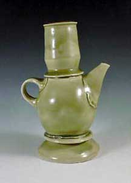
Celadon Ewer, 8” x 5” x 4”, wheel thrown
and assembled, porcelain, cone 10 gas fired reduction, Satin
Green Glaze, 2000. |
In ancient times potters did not have clay suppliers to
provide them with raw materials for their glazes and clay
bodies. They had to find, collect and process all the materials
that they needed to produce their pottery from their local
environment. This may have meant digging clay from the river
bank, grinding up feldspar from an outcropping or collecting
ashes from the fire pit. The result was that potters in one
area had distinctly different clay and glazes from potters
only a hundred miles away.
Today, because of private property laws, it is more difficult
to run out and start mining local clay from your neighbor’s
yard. But there are other sources of ceramic raw materials
available to the modern potters that are both locally available
and already processed. They are in the products we use everyday,
which are sold in hardware, grocery or discount super stores.
These materials are similar to the ones that our ancestors
used for their clay and glazes but they are processed for
other uses that are more relevant to our daily societal needs,
like antacids, cat litter, sunscreen, toothpaste, etc. The
trade off is that, although we may not be getting the same
regionally unique materials our ancestors did, we do have
a readily available source of uniformly processed raw materials
with little or no effort. We just have to have our credit
cards available. Using products intended for other uses to
create glazes, a potter can still come up with a unique and
interesting palate of colors and surfaces and at the same
time learn about material properties and their interactions
in glazes.
|
| 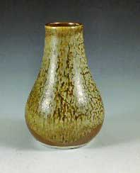 |
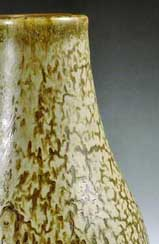 |
| Vase I, 8” x 7” x 7”, wheel thrown,
porcelain, cone 10 gas fired reduction, Carmel Glaze with Iron
Yellow over, 2000. |
Detail of Vase I, 8” x 7” x 7”, wheel
thrown, porcelain, cone 10 gas fired reduction, Carmel Glaze
with Iron Yellow over, 2000. |
To create glazes the traditional way you need some basic building
blocks: clay, feldspar, silica, whiting, dolomite, talc, colorants,
etc. The same is true when you are creating glazes from store bought
products. A simple reading of the ingredients list will reveal that
many of the products we use contain high quantities of clay, silica,
feldspar, etc. The difficulty can be finding sources of pure materials
because one product may contain several ingredients. But that is
no different from the problem our ancestors face had when they dug
materials from the ground. It simply requires a series of tests
to determine what combinations will make suitable glazes.
First we must find sources of the basic building blocks of a glaze.
Clay is available in many products, a major one being cat litter
which, in America, is usually coarsely ground Missouri fire clay.
This is a very consistent and inexpensive source of clay for your
glazes and it comes in handy 20 pound bags. You could also select
the clumping type of cat litter that contains bentonite. Bentonite
is a type of clay that, when wet, swells up to 50 times its volume.
This is added to cat litter so that after the cat has used the box
the owner can easily identify the obvious swelling clumps that need
to be removed. This type of cat litter is great to use in glazes
because it helps keep the glazes well suspended. Clay is also present
in many other products including make-up and “mud masks,”
but using these products to make glazes can to be very expensive.
| 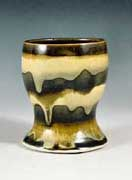 |
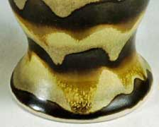 |
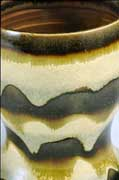 |
Goose Egg Holder,
4” x 3” x 3”, wheel thrown, porcelain, cone
10 gas fired reduction, Temmoku and Iron Yellow Glaze, 2000. |
1st Detail of Goose Egg Holder,
4” x 3” x 3”, wheel thrown, porcelain, cone
10 gas fired reduction, Temmoku and Iron Yellow Glaze, 2000. |
2nd Detail of Goose Egg Holder, 4” x 3”
x 3”, wheel thrown, porcelain, cone 10 gas fired reduction,
Temmoku and Iron Yellow Glaze, 2000. |
Feldspars are available in the hardware or paint store in the form
of a sanding medium called “rottenstone” and “pumice
stone.” Essentially these are very finely ground (325 mesh)
iron bearing feldspars. The pumice stone can be used to make a wonderful
green celadon glaze while the rottenstone, which has more iron,
makes great temmokus and caramel colored kakis. A nice thing about
the rottenstone is that it contains magnesium oxide, which produces
wonderful satin surfaces. If you cannot find the ground pumice stone
it is also available in a block form that is used to remove corns
and calluses from the feet. This can be ground by hand to provide
a coarser mesh feldspar.
Silica is a little difficult to find in its pure state in products
sold for uses other than glazes. But it is used in many products
such as, toothpaste, cleanser, desiccants (gel bags in electronic
products) and insecticides. I used cleanser to supply silica because
it also provided some sodium oxide. The silica is used as the “scrubber”
and the soap provides the sodium oxide. Toothpaste also contains
silica, which is listed on the label as “hydrated silica.”
Silica is also available as diatomaceous earth, which is sold in
garden stores as an insecticide. It is a rock, mined in coastal
California, composed of the shells of dead microscopic organisms,
called diatoms. When the one celled creatures die, their sharp silica
shells remain. These sharp shells are useful as an insecticide because
they scratch the exoskeleton of insects causing them to get infections
and die. It is also used in abrasives, cement, roofing, paint and
plastics.
Portland cement is a source of silica but also contains alumina
and calcium oxides. It can be used in glazes but the difficulty
is that it has a very short shelf life because it hardens very quickly.
In the same aisle as cement are the cement stains or colorants.
These are a great source of iron, manganese and other coloring oxides
that we use in ceramics. Actually my favorite source of iron is
a cement pigment made by Bayer, called synthetic red and yellow
iron oxide. Synthetic iron is the strongest form of iron oxide available,
because of its purity and extremely small particle size. In fact,
I use it in many of my standard iron glazes.
| 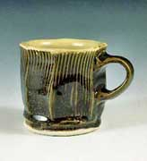 |
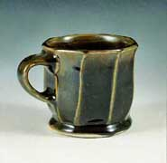 |
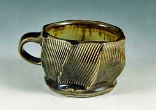 |
| Cup I, 3 ½” x 5” x 4”, wheel
thrown and faceted, porcelain, cone 10 gas fired reduction,
Iron Yellow Glaze inside and Temmoku outside, 2000. |
Cup II, 3 ½” x 5” x 4”, wheel
thrown and faceted, porcelain, cone 10 gas fired reduction,
Temmoku Glaze, 2000. |
Cup III, 3 ½” x 5” x 4”,
wheel thrown and faceted, porcelain, cone 10 gas fired reduction,
Satin Green Glaze inside and Temmoku outside, 2000. |
| 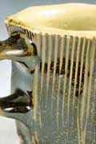 |
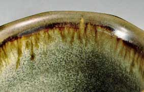 |
Detail of Cup I,
3 ½” x 5” x 4”, wheel thrown and faceted,
porcelain, cone 10 gas fired reduction, Iron Yellow Glaze inside
and Temmoku outside, 2000. |
Detail of Cup III, 3 ½” x 5” x
4”, wheel thrown and faceted, porcelain, cone 10 gas fired
reduction, Satin Green Glaze inside and Temmoku outside, 2000. |
Calcium carbonate has been used for centuries by humans for a variety
of processes and products. Our ancestors used plant and wood ash
as a source of calcium carbonate as well as sea shells and limestone.
Today, one of the most well known uses of calcium carbonate is in
antacids. Rolaids and other generic antacids are primarily calcium
carbonate but some also contain magnesium carbonate. Calcium carbonate
and magnesium carbonate together form dolomite. Calcium carbonate
is also sold in hardware stores as window cleaner and as the powder
used to make lines on football fields.
A short walk down the aisle of any drug store will provide a multitude
of other possibilities for glaze materials. For example, Alka-seltzer
is an excellent source of sodium bicarbonate, otherwise known as
baking soda. In addition to sodium bicarbonate, Alka-seltzer "Gold"
contains potassium bicarbonate or what is commonly referred to as
"pearl ash". Sodium bicarbonate is also used in manufacturing
textiles and glass, neutralizing acids, purifying air, treating
paper and in the production of fire extinguishers.
Magnesium carbonate is readily available from several products,
the tastiest of which is Milk of Magnesia. Baby powder is another
excellent source of magnesium oxide in the form of talc, which means
that you also get silica and a wonderful fragrance. Baby powder
is treated to resist water, so it is somewhat difficult to mix into
a glaze batch. I used a bit of liquid soap to break the surface
tension, thus allowing the powder to become wet. (Be sure to check
the ingredient list of the “Baby Powder” as some now
contain corn starch instead of talc.)
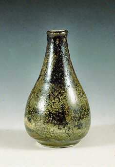
Vase III, 6” x 5” x 5”, wheel thrown,
porcelain, cone 10 gas fired reduction, Carmel Glaze first then
Stain Green Glaze over, 2000. |
Historically, magnesium oxide was used as "flash"
powder by early photographers and is still used for special
effects at rock concerts. Magnesium carbonate, along with
calcium carbonate, acts as a buffer in aspirin to reduce stomach
upset. Magnesium, in the sulfate form, is also present in
"Epsom salts" which potters commonly use for flocculation
in glaze buckets.
Zinc oxide is available in the drug store in the form of
antiseptic ointment or powder called "Gold Bond"
and as a white nose cream to prevent sunburn. In industry,
it is mainly used as a protective coating for galvanizing
metals, but is also used as a paint pigment, in storage batteries,
as a filler in tires, in television tubes and fluorescent
coatings. Zinc oxide is also used in make-up, and for the
treatment of acne, poison ivy (in calamine lotion), and eczema.
I found Neutrogena sunscreen for sensitive skin to be a great
source of titanium dioxide. Regular sunscreen resists sun
chemically but this product reflects sun by putting a thin
layer of white titanium dioxide particles on the skin. Titanium
dioxide is used in the ink to print the label on each M &
M candy. It is also used extensively in paint and liquid paper
as a whitener. In 1940, titanium dioxide replaced "white
lead" as a whitening agent in paint. Because of its lightweight
property as a metal, it is used in the construction of aircraft,
bike frames and eyeglass frames. It is used in joint implants
and for rods and pins in orthopedic work because bone will
grow and attach to it.
One difficulty I encountered was finding non-iron colorants.
Although make-up was a great source for both kaolin and colorants,
it turned out to be prohibitively expensive. A variety of
colorants can be found in concentrated form as grout and cement
stains. Generally, these colorants are iron-based blacks,
grays and reds, but you can occasionally find blues and some
other non-iron colors.
|
As I tested the materials, I found that the iron impurities in
pumice stone and rottenstone were sufficient to produce a nice range
of colors including light blue, green, yellow, caramel and browns
from light to a rich dark brown. Iron has a great range of color
response in glazes depending on firing atmosphere and other oxides
present. For example, calcium has a bleaching effect on iron, and
thus can turn an olive green celadon to a light green, and with
sufficient reduction and some added silica, will produce a very
nice blue celadon. I added Crest extra-whitening toothpaste to my
green celadon and, in heavy reduction, got a nice light blue celadon
(see glaze #11). In the presence of magnesium and calcium, small
amounts of iron will produce a nice iron yellow. (See glaze #2,
which is very similar to the $20,000 Heino Iron Yellow).
| 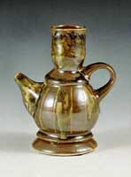 |
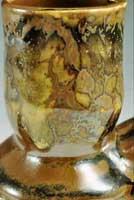 |
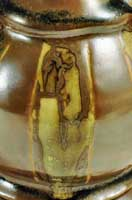 |
| Ewer II, 7” x 5” x 6”, wheel thrown
and assembled, porcelain, cone 10 gas fired reduction, Carmel,
Temmoku and Wood Ash Glazes, 2000. |
1st Detail of Ewer II,
7” x 5” x 6”, wheel thrown and assembled,
porcelain, cone 10 gas fired reduction, Carmel, Temmoku and
Wood Ash Glazes, 2000. |
2nd Detail of Ewer II,
7” x 5” x 6”, wheel thrown and assembled,
porcelain, cone 10 gas fired reduction, Carmel, Temmoku and
Wood Ash Glazes, 2000. |
This experiment in glazing has provided me with both a beautiful
glaze palate produced solely from locally available products and
an expanded understanding of the uses of ceramic materials in everyday
life. The following glaze recipes were achieved solely by a conducting
multiple series of line blend tests. Several books that have helped
me in this investigation include, Mimi Obstler's "Out of the
Earth, Into the Fire," and David Richerson's "The Magic
of Ceramics."
I do caution against using these glazes for functional pottery,
as all the ingredients as well as the subsequent compounds formed
during firing process are not known. Experimentation should be pursued
only on non-functional pieces in well-ventilated outdoor kilns.
RECIPES - ALL GLAZES WERE FIRED IN MEDIUM TO HEAVY REDUCTION IN
AN UPDRAFT ALPINE GAS KILN.
#1. SATIN GREEN Cone 10
Pumice stone - 50.0 g.
Alka-Seltzer (Gold) - 14 tablets
Talcum powder - 10 g.
#2. Iron Yellow Cone 10
Pumice stone - 50.0 g.
Rolaids - 14 tablets
Talcum powder - 10.0 g.
#3. CARMEL Cone 10
Pumice stone - 50.0 g.
Rottenstone - 50.0 g.
#4. TEMMOKU cone 10
Rottenstone - 50.0 g.
Pumice stone- 10.0 g
Alka-Seltzer (Gold) - 2 Tablets
Calgon - 5.0 g
Rolaids - 11 tablets
#5. FAKE ASH cone 10
Cat litter -50.0 g.
Portland White Cement-15.0 g.
Fake Ash Variations:
#6. For a slightly lighter color:
Add: Comet - 7.0 g.
#7. For a slightly softer surface:
Add: Milk of Magnesia-4 tsps.
#8. For a more milky glaze:
Add: Neutrogena sunscreen for sensitive skin -7.g
#9. AMBER cone 10
Rottenstone - 50.0 g.
Pumice stone - 30.0 g.
Portland White cement - 20.0 g.
#10. WOOD ASH cone 10
Rottenstone- 100.0 g
Diatomaceous earth - 10.0 g.
Wood ash- 30.0 g.
Milk of Magnesia- 2 tsps.
#11. Blue Celadon Cone 10
Pumice stone - 50 g.
Alka-Seltzer (Gold)- 2 tablets
Rolaids - 12 Tablets
Crest (Extra-whitening) - 20 g.
© John Britt 2005. Many thanks to John
Britt for permission to publish this article. John is the author
of “The
Complete Guide to High-Fire Glazes: Glazing and Firing at cone 10”,
published by Lark Books, 2004. Signed copies are available at John's
website: www.johnbrittpottery.com
f or $25.00 USD plus shipping ($5.00 U.S. and $20.00 International).
Related Article: Flambé Glazes
More Articles
|
{kind=link}
{kind=link}
{kind=link}
{kind=link}
{kind=link}
{kind=link}
{kind=link}
{kind=link}
{kind=link}
{kind=link}
{kind=link}
{kind=link}
{kind=link}
{kind=link}
{kind=link}